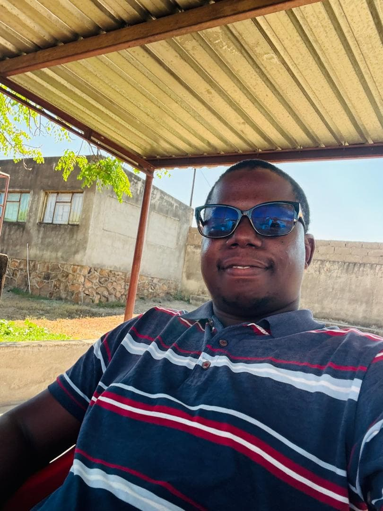

Crirona Chauke | WDD 130

My name is Crirona Chauke. I am 26 years old, unmarried, and based in Neshuro, Mwenezi, Zimbabwe. I am an entrepreneur, graphic designer, and aspiring software developer currently studying through BYU-Pathway Worldwide. I founded KwaMambo Tenzi computer village, whikch offers printing, graphic design, phones and accessories, and ecocash service. I enjoy solving real-life problems through technology. My goal is to grow a technology compy that creates employment and equips young people with practical digital skills.